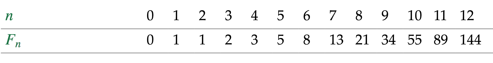

Quizás uno de los puntos más delicados a la hora de aplicar TDD como herramienta de diseño es en el
paso en el que ya tenemos un test que falla y debemos crear la implementación mínima para que el
test pase. Para ello Kent Beck, en su libro Test Driven Development by Example, expone un conjunto
de estrategias, también conocidas como patrones de barra verde, que nos van a permitir avanzar en
pasos pequeños hacia la solución del problema.
- Implementación falsa
Una vez que tenemos el test fallando, la forma más rápida de obtener la primera implementación es
creando un fake que devuelva una constante. Esto nos ayudará a ir progresando poco a poco en la
resolución del problema, ya que al tener la prueba pasando estamos listos para afrontar el
siguiente caso.
La mejor forma de entender el concepto es con un ejercicio práctico. El ejercicio es simple,
vamos a construir una función que reciba como parámetro un número entero n y devuelva el n-ésimo
número de Fibonacci. Recuerda la sucesión de Fibonacci comienza con 0 y 1, los siguientes
términos siempre son la suma de los dos anteriores:

Observando la tabla anterior, podemos darnos cuenta de que los casos edge son 0 y 1, además de
los más sencillos de implementar. Vamos a empezar por crear el test para n = 0:
//Fibonacci, primer test.
describe('Fibonacci should', () => {
it('return zero if receive zero', () => {
expect(fibonacci(0)).toBe(0);
});
});
La implementación fake más obvia que permite que el test pase es hacer que la función fibonacci
devuelva 0 como una constante:
function fibonacci(n) {
return 0;
}
Una vez que tenemos el primer test pasando, la idea es transformar gradualmente la constante en
una expresión. Veámoslo en el ejemplo, para ello primero debemos crear un test para el siguiente
caso obvio, n = 1;
it('return one if receive one', () => {
expect(fibonacci(1)).toBe(1);
});
Ya tenemos el siguiente test fallando. El siguiente paso obvio es escribir una pequeña expresión
con un condicional para una entrada con n = 0 devuelva 0 y para n = 1 devuelva 1:
function fibonacci(n) {
if(n ==0)
return 0;
else
return 1;
}
Como puedes observar, la técnica de la implementación falsa nos ayuda a progresar poco a poco.
Principalmente tienes dos ventajas inherentes, la primera es a nivel psicológico, ya que se hace
más llevadero tener algunos test en verde, en vez de en rojo, que nos permitan ir dando pasos
pequeños hacia la solución. La segunda tiene que ver con el control del alcance, ya que esta
práctica nos permite mantener el foco en el problema real, evitando caer en optimizaciones
prematuras.
- Triangular
Triangular, o la técnica de la triangulación, es el paso natural que sigue a la técnica de la
implementación falsa. Es más, en la mayoría de los contextos, forma parte de la triangulación,
basándose en lo siguiente:
- Escoger el caso más simple que debe resolver el algoritmo.
- Aplicar Red-Green-Refactor.
- Repetir los pasos anteriores cubriendo las diferentes casuísticas.
Para comprender cómo funciona la triangulación, vamos a continuar desarrollando el ejemplo de
Fibonacci, el cual, en parte, ya hemos empezado a triangular. El siguiente caso que podríamos
cubrir es para n = 2.
it('return one if receive two’, () => {
expect(fibonacci(2)).toBe(1);
});
En esta ocasión el test pasa, por lo tanto, nuestro algoritmo también funciona para n = 2. El
siguiente paso sería comprobar qué ocurre para n = 3.
it('returns two if receive three', () => {
expect(fibonacci(3)).toBe(2);
});
Como suponíamos, el test falla. Este paso nos ayudará a aproximarnos a la implementación de una
solución más genérica. Ya que podríamos crear una implementación falsa para n = 3 y añadir otro
condicional que devuelva 1 para n = 1 y n = 2.
function fibonacci(n) {
if(n == 0)
return 0;
if(n == 1 || n == 2)
return 1;
else
return 2;
}
Ahora que tenemos los test pasando, vamos a comprobar qué sucede para n = 4:
it('returns three if receive four', () => {
expect(fibonacci(4)).toBe(3);
});
Al llegar a este punto, ya te habrás dado cuenta de que sería más fácil escribir la
implementación obvia que seguir haciendo ramas de decisión:
function fibonacci(n) {
if(n == 0)
return 0;
if(n == 1 || n == 2)
return 1;
else
return fibonacci(n - 1) + fibonacci(n - 2);
}
En este paso, nuestro algoritmo funciona para cualquier valor de n, aunque aún podemos
refactorizarlo para eliminar duplicidades y darle un aspecto más funcional:
function fibonacci(n) {
const partialFibonacci = (n) =>
n == 1
? 1
: fibonacci(n - 1) + fibonacci(n - 2)
return n == 0
? 0
: partialFibonacci(n)
}
Con este último paso hemos resuelto el algoritmo de Fibonacci aplicando un enfoque funcional y
utilizando la triangulación. Quizás en un hipotético siguiente paso deberíamos eliminar los test
para n=3, n=4 y n=5, ya que en este punto no aportan demasiado valor, y crear un test que
compruebe el algoritmo generando un número aleatorio mayor que 2 cada vez que se ejecuta.
Como puedes observar, la triangulación es una técnica muy conservadora para aplicar TDD, su uso
tiene sentido cuando no tenemos clara la implementación obvia de la solución.
- Implementación obvia
Cuando la solución parece muy sencilla, lo ideal es escribir la implementación obvia en las
primeras iteraciones del ciclo Red-Green-Refactor.
La problemática con esto surge cuando nos precipitamos, creyendo que se trata de un problema
sencillo, cuando en realidad no lo es, porque tiene, por poner un ejemplo, algún caso edge sobre
el que no habíamos reflexionado.